Painel de LLMOps e governança de IA
Painel interno que acompanha todo uso de modelo de linguagem da empresa, serviço por serviço: quantas chamadas, quanto erro e de que tipo, quanto demora, quanto ocupa da GPU e das cotas, o que entrou e o que saiu de cada modelo e que riscos cada integração carrega. É também a tela de governança do agente que atende a empresa pelo Teams e da rotina em que um agente corrige sozinho as falhas do Airflow.
- 11serviços instrumentados, de DAGs a aplicações
- 6provedores medidos, entre modelos locais e APIs
- 9telas, de uso e infraestrutura a avaliação de agente
- ~1 msde custo da telemetria em cada chamada
Por que existe
Cada serviço chamava o próprio modelo, entre modelos locais servidos pelo Ollama e APIs como Groq, Claude, Gemini e Mistral, e o único rastro era o log de cada um. Perguntas simples ficavam sem resposta: que serviço mais ocupa a GPU, quantas vezes uma chave bateu no limite de cota, se uma classificação ficou mais lenta, o que exatamente foi mandado para um provedor externo. O painel junta tudo numa tela sem exigir que os serviços mudem de arquitetura, bastando envolver a chamada ao modelo numa função da biblioteca de telemetria.
Coleta
POR CHAMADA
FONTES EXISTENTES

A biblioteca de telemetria é um único arquivo Python só com biblioteca padrão, com um espelho em Node para o serviço que não é Python. Um gerenciador de contexto envolve a chamada e registra serviço, tarefa, provedor, modelo, o nome da chave usada (nunca o segredo), status, duração, tempo até o primeiro token, tokens de entrada e saída, cota restante lida dos cabeçalhos de rate limit e, dentro do Airflow, o run e a task. A exceção é classificada em tipos como limite de tokens por minuto ou por dia, chave inválida, timeout, erro 5xx e falta de memória, registrada e relançada sem mudar o comportamento do serviço.
O envio acontece em lote numa thread separada, de modo que o serviço nunca espera pelo painel, e se o painel estiver fora do ar o registro é descartado e o serviço segue normalmente. Metaprompt, entrada e resposta são guardados com corte de tamanho, mascarados duas vezes, na biblioteca e na ingestão, para CPF, CNPJ, e-mail, telefone e segredos, e apagados depois de catorze dias. Cada serviço leva uma cópia literal da biblioteca, porque o build de cada um só enxerga a própria pasta, e um script de sincronização acusa cópia divergente.
Além das chamadas, um coletor lê a cada quinze minutos o que já existia: os logs do Airflow no object storage, com os erros de LLM classificados, os metadados das tasks, as métricas de GPU, a contagem de linhas gravadas por tabela e, ao vivo, os schemas do agente e o grafo de memória.
O que o painel mostra
Uso. Chamadas e erros por dia separados entre modelo local e APIs externas, execuções e duração das DAGs que usam LLM, latência, p95, tempo até o primeiro token e cota por chave. Uma chave revogada que continuava configurada, por exemplo, deixou de ser um erro perdido no log e passou a aparecer como uma série de erros de chave inválida com o nome da chave.
Infraestrutura. Ocupação da GPU por hora e por serviço, cruzando a utilização da placa com as janelas em que cada serviço chamou o modelo local, uso da GPU fora de qualquer serviço conhecido e linhas gravadas por dia em cada tabela, para notar uma pipeline que parou de escrever.
Governança. Um inventário de riscos levantado lendo o código de cada integração: onde roda, que modelo usa, que dado envia, se aceita texto livre do usuário e portanto está exposta a injeção de prompt, que ferramentas o modelo tem e quem pode disparar. Cada risco aponta o arquivo e a linha de onde saiu, o que transforma LGPD e segurança numa lista de correções.
Respostas. Auditoria do que entra e sai dos modelos, navegando de pipeline para run, de run para chamada e da chamada para o metaprompt, a entrada e a resposta inteiros, já mascarados. Cada versão de metaprompt fica registrada por hash, então dá para ver quando o prompt de uma DAG mudou e se a resposta mudou junto.
Agentes e memória. Governança do agente do Teams: conversas, mensagens e custo equivalente por dia, decisões da triagem em grupo, pico de uso por pessoa contra o limite e o contexto de cada resposta camada a camada, com os tokens de configuração, metaprompt, contexto do chat, ferramentas, histórico e saída. Junto vêm o explorador do grafo de memória, em three.js com d3-force, e o relatório do juiz noturno que avalia as respostas do agente.
Cada tela também sai em texto puro, com um índice em /llms.txt, para que um agente leia o painel com as mesmas regras de privacidade da tela.
Autocorreção do Airflow
AUTOCORREÇÃO

Uma DAG lê as falhas do Airflow toda manhã, agrupa as ocorrências em problemas por DAG, task e assinatura do erro e pede ao Claude a análise de cada um. O problema é classificado como já corrigido, externo, cascata de outra falha ou incerto, e o que tem correção vira um pull request por dia. Quando a rotina precisa de informação, ela pergunta ao time, e a resposta é dada no painel, que mostra também o PR e o custo de cada rodada.
Ficha técnica
FastAPI e Jinja2 em Python, com o grafo desenhado em three.js e d3-force. Os dados ficam num schema próprio no PostgreSQL, com chamadas, textos, versões de metaprompt, eventos de log e contagem de tabelas. Roda em Docker atrás de um nginx, só na rede interna, com cerca de dezessete mil linhas entre Python, templates, CSS e JavaScript, 27 rotas e testes automatizados. Fora do próprio schema, as únicas escritas são as chaves de configuração do agente e as respostas do time à autocorreção.
Python · FastAPI · Jinja2 · PostgreSQL · Apache Airflow · Ollama · Groq · Claude · Docker · nginx · three.js · d3-force · FalkorDB